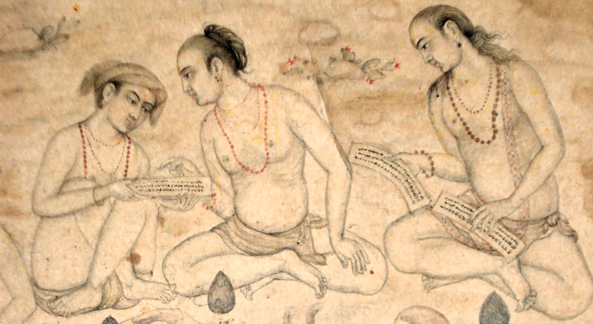

PROPOSED PROJECT OUTPUTS
Critical Editions and Annotated Translations of Sanskrit Texts on Haṭhayoga
| Text | Editor(s) |
| Amṛtasiddhi | Mallinson (with Dr Péter-Dániel Szántó) |
| Dattātreyayogaśāstra | Mallinson |
| Gorakṣaśataka | Mallinson |
| Vivekamārtaṇḍa | Mallinson and Birch |
| Yogabīja | Birch and Mallinson |
| Amaraughaprabodha | Birch |
| Yogatārāvalī | Birch |
| Yogacintāmaṇi (āsana section) | Birch and Singleton |
| Haṭhasaṃketacandrikā | Birch and Singleton |
| Haṭhābhyāsapaddhati | Birch, Mallinson and Singleton |
Monographs
| Let the Sādhus Talk: Past and Present Emic Understandings of Yoga and Yogis | Bevilacqua |
| Yoga on the Eve of Colonialism: The Historical Foundations of Modern Indian Yoga | Birch |
| Yoga and Yogis: The Texts, Techniques and Practitioners of Early Haṭhayoga | Mallinson |
| A History of the Physical and Postural Practices of Indian Yoga, from Antiquity to the Pre-Colonial Period | Singleton |
| The team will also be publishing several articles, book chapters and encyclopedia entries |
PREVIOUS PUBLICATIONS BY THE PROJECT TEAM
| DR JASON BIRCH | |
|---|---|
| 2015 | “The Yogataravali and the Hidden History of Yoga”, Namarupa Magazine, Issue 20 (Spring 2015) |
| 2013 | ‘The Amanaska: King of All Yogas: A Critical Edition and Annotated Translation with a Monographic Introduction.’ DPhil Thesis, Oxford. |
| 2013 | ‘Rājayoga: The Reincarnations of the King of All Yogas: The Reincarnations of the King of All Yogas’, The International Journal of Hindu Studies, 17, 3: 401–444 |
| 2011 | ‘The Meaning of haṭha in Early Haṭhayoga’, The Journal of the American Oriental Society, 131.4. |
| 2011 | “Universalist and Missionary Jainism: Jain Yoga of the Terāpanthī Tradition” in Yoga in Practice, Ed David White, University of Chicago Press |
| DR JAMES MALLINSON |
|
|---|---|
| BOOKS |
|
| 2009 | The Ocean of the Rivers of Story by Somadeva. Vol.~2. New York University Press. |
| 2007 | The Ocean of the Rivers of Story by Somadeva. Vol.~1. New York University Press. |
| 2007 | The Shiva Samhita. New York: YogaVidya.com. |
| 2007 | The Khecarīvidyā of Ādinātha. A critical edition and annotated translation of an early text of haṭhayoga. London: Routledge. (In 2010 the book was reprinted in paperback by Routledge and an Indian hardback edition was published by Indica Books.) |
| 2006 | Messenger Poems by Kalidasa, Dhoyi & Rupa Gosvamin. New York University Press. |
| 2005 | The Emperor of the Sorcerers by Budhasvamin. Vol.~2. New York University Press. |
| 2005 | The Emperor of the Sorcerers by Budhasvamin. Vol.~1. New York University Press. |
| 2004 | The Gheranda Samhita. New York: YogaVidya.com. |
| ARTICLES & BOOK SECTIONS |
|
| 2014 | “Śāktism and Haṭhayoga,” in The Śākta Traditions. London: Routledge. |
| 2014 | “Haṭhayoga’s Philosophy: A Fortuitous Union of Non-Dualities”, pp. 225-247 in Journal of Indian Philosophy volume 42, issue 1. |
| 2014 | “The Yogīs’ Latest Trick,” pp. 165-180 in Journal of the Royal Asiatic Society volume 24, issue 1. |
| 2014 | Entry on “The Kumbh Mela” in Keywords in Modern Indian Studies to be published by Oxford University Press (Delhi) in the series “SOAS Studies on South Asia”. |
| 2013 | “Yogic Identities: Tradition and Transformation”. Smithsonian Institute Research Online. This is an online-only publication and can be found here. |
| 2013 | “Yogis in Mughal India”, pp. 35-46 in Yoga: The Art of Transformation, ed. Debra Diamond. Washington DC: Arthur M. Sackler Gallery (Smithsonian Institution). |
| 20013 | “Āsana” (with Debra Diamond), pp.150-159 in Yoga: The Art of Transformation, ed. Debra Diamond. Washington DC: Arthur M. Sackler Gallery (Smithsonian Institution). |
| 2011 | “The Yogīs’ Latest Trick”. Review article in Tantric Studies (University of Hamburg). |
| 2011 | 5,000-word Entry on “Haṭhayoga” in the Brill Encyclopedia of Hinduism Vol. 3 (pp. 770-781). Leiden: Brill. |
| 2011 | 10,000-word Entry on “The Nāth Saṃpradāya” in the Brill Encyclopedia of Hinduism Vol. 3 (pp. 407-428). Leiden: Brill. |
| 2011 | “Siddhi and Mahāsiddhi in Early Haṭhayoga”, pp. 327–344 in Yoga Powers, ed. Knut Jacobsen. Leiden: Brill. |
| 2011 | “The Original Gorakṣaśataka,” pp. 257–272 in Yoga in Practice, ed. David Gordon White. Princeton: Princeton University Press. |
| 2005 | “Rāmānandī Tyāgīs and Haṭhayoga,” pp. 107-121 in the Journal of Vaishnava Studies Vol.~14, No.~1/Fall 2005. Reprinted in Namarupa magazine (2006). Reproduced with permission of the Journal of Vaishnava Studies |
| TELEVISION DOCUMENTARIES | |
| 2014 | Mystical Journey: Kumbh Mela. Smithsonian Channel and BBC4. |
| 2007 | The Beginner’s Guide to Yoga, Channel 4 and the Discovery Channel. |
| DR MARK SINGLETON |
|
|---|---|
| 2016 | Yoga and physical culture: Transnational history and blurred discursive contexts. In Knut A. Jacobsen, ed., Routledge Handbook of Contemporary India, 172-84. Abingdon: Routledge. |
| 2015 | Preface to the Serbian edition of Yoga Body, the Origins of Modern Posture Practice (Belgrade: Neopress Publishing). |
| 2015 | Telo joge: koreni moderne posturalne prakseSerbian edition of Yoga Body, the Origins of Modern Posture Practice) (Belgrade, Neopress Publishing). |
| 2014 | ヨガ・ボディ―ポーズ練習の起源 ― (Japanese edition of Yoga Body, the Origins of Modern Posture Practice) (Tokyo: Ohsumi Shoten). |
| 2014 | (ed. with Ellen Goldberg) Gurus of Modern Yoga, Oxford University Press USA. This book includes a chapter co-written by Mark Singleton and Tara Fraser and entitled ‘T. Krishnamacharya, ”Father of Modern Yoga”’. |
| 2013 | ‘Body at the Centre: The Postural Yoga Renaissance and Transnational Flows’ in Beatrix Hauser (ed.) Yoga Traveling: Bodily Practice in Transcultural Perspective (Heidelberg: Springer), pp. 37-56. |
| 2013 | ‘Modern Yoga’, in Debra Diamond (ed.) Yoga the Art of Transformation, Freer and Sackler Galleries, Smithsonian Institute, Washington D.C., pp.95-103. |
| 2012 | ‘The Medium and the Message: Visual Reproduction and the Yogasana Revival’, in V. Lo and R. Yoeli-Tlalim (eds.) Sports, Medicine and Immortality: from Ancient China to the World Wide Web (London: British Museum). |
| 2012 | ‘Yoga Makaranda of T. Krishnamacharya’, in D.G. White (ed.), Yoga in Practice (Princeton University Press), pp.337-352. |
| 2010 | Yoga Body, The Origins of Modern Posture Practice (Oxford University Press). |
| 2009 | ‘Modern Yoga’, in K.A. Jacobsen (ed.) Encyclopedia of Hinduism (Leiden: Brill). |
| 2008 | (ed. with Jean Byrne) Yoga in the Modern World: Contemporary Perspectives (London; New York: Routledge Hindu Studies Series). |
| 2008 | ‘The Classical Reveries of Modern Yoga: Patañjali and Constructive Orientalism’, in Singleton and Byrne (eds). (See above.) |
| 2008 | ‘Introduction: Putting the Modern in Modern Yoga’, in Singleton and Byrne (eds). (See above.) |
| 2008 | ‘The Eastern Classics Program at St. John’s College’, in T. de Bary (ed.) Classics for an Emerging World: Proceeding of the Conference at Columbia University. |
| 2008 | (Ed.) Asian Medicine, Tradition and Modernity (Special Yoga Issue) 3.1 (Leiden: Brill). |
| 2008 | ‘Suggestive Therapeutics: New Thought’s Relationship to Modern Yoga’ in Asian Medicine, Tradition and Modernity, 3.1: 64-84. |
| 2008 | ‘Lure of the Fallen Seraphim: Sovereignty and Sacrifice in James Joyce and Georges Bataille’, James Joyce Quarterly, 44.2 (Winter), 303-323. |
| 2008 | ‘Yoga, Eugenics and Spiritual Darwinism in the Early Twentieth Century’. International Journal of Hindu Studies, 11.2: 125-146. |
| 2008 | ‘British Wheel of Yoga’ in D. Cush, C. Robinson and M.York (eds.) Encyclopedia of Hinduism, (London and New York: Curzon-Routledge): 123-3. |
| 2008 | ‘Choudhury, Bikram (b. 1946)’ in D.Cush et al (eds.): 142. |
| 2008 | ‘Desikachar, T.K.V. and Viniyoga’ in D. Cush et al (eds.): 178. |
| 2008 | ‘Indra Devi (1900-2002)’ in D. Cush et al (eds.): 369-70. |
| 2008 | ‘Iyengar, B.K.S. (b. 1918) and Iyengar Yoga’ in D. Cush et al (eds.): 380-1. |
| 2008 | ‘Krishnamacharya, T. (1888-1989)’ in D. Cush et al (eds.): 424. |
| 2008 | ‘Kuvalayananda, Swami (1883-1966) and Kaivalyadhama’ in D. Cush et al (eds.): 441-2. |
| 2008 | ‘Jois, K. Pattabhi and Ashtanga Vinyasa Yoga’ in D. Cush et al (eds.): 393. |
| 2008 | ‘Satchidananda, Swami and Integral Yoga’ in D. Cush et al (eds.): 769. |
| 2007 | ‘Satyananda, Swami (b. 1923) and the Bihar School of Yoga’ in D. Cush et al (eds.): 776. |
| 2007 | ‘Vishnudevananda (1927-93) and Sivananda Yoga’ in D. Cush et al (eds.): 960-1. |
| 2007 | ‘Yogendra, Shri (1897-1989) and the Yoga Institute, Santa Cruz’: 1041-2. |
| 2007 | ‘Yoga, Modern’ in D. Cush et al (eds.): 1033-1038. |
| 2006 | Review of Joseph Alter’s Yoga in Modern India, in Asian Medicine, Tradition and Modernity, 2.1: 91-93. |
| 2005 | ‘Salvation Through Relaxation: Proprioceptive Therapy in Relation to Yoga’, Journal of Contemporary Religion 20, 3 (2005) 289-304. |
| DR S V B K V GUPTA |
|
|---|---|
| BOOK | |
| Kāvyadarpaṇa of Rājacūdāmaṇidīkṣikta (I & IInd Ullāsa), Amazon.com (ISBN-10: 151941109X, ISBN-13: 978-1519411099) | |
| ARTICLES | |
| 2016 | Karaṇa-sampradāna-apādānānāṁ taddhitapradarśanam, International Journal of Indian Languages and Literature, Vol.1 Issue.2, PP. 102-106 |
| 2015 | Śāstreṣu laukikanyāyāḥ, International Journal of Indian Languages and Literature, Vol.1 Issue.1, PP. 76-88. |
| 2015 | Saṁskṛtakāvyānaṁ vikāsaḥ, International journal of Sanskrit research, Vol. 1, Issue.4, Part.A, PP.108-109 |
| 2015 | Paṇini’s influence on verbal cognition, International journal of Sanskrit research, Vol.1, Issue.4, Part A, PP. 110-113 |
| 2015 | jānakīharaṇamahākāvyasya āvirbhāvaḥ, Gursārvabhaumaḥ, Vol.2 Issue.6, PP. 41-45 |
| 2011 | Śābdabodha according to Paṇini’s Grammar (With special reference to Naiṣadīyacarita), The Journal of Sanskrit Academy, Volume XXI, PP.192-194 |